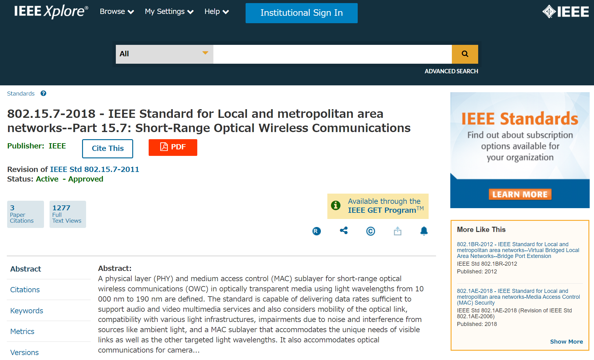

IEEE 802 Standards Committee
Vice chair of Task Group 15.7
(2014-2018)
Vice chair of Task Group 15.7
(2014-2018)


Panasonic / Real-AI Team
Cited by: 3,779
Visible Light Communication / Machine Learning / Pattern Recognition / Computer Vision